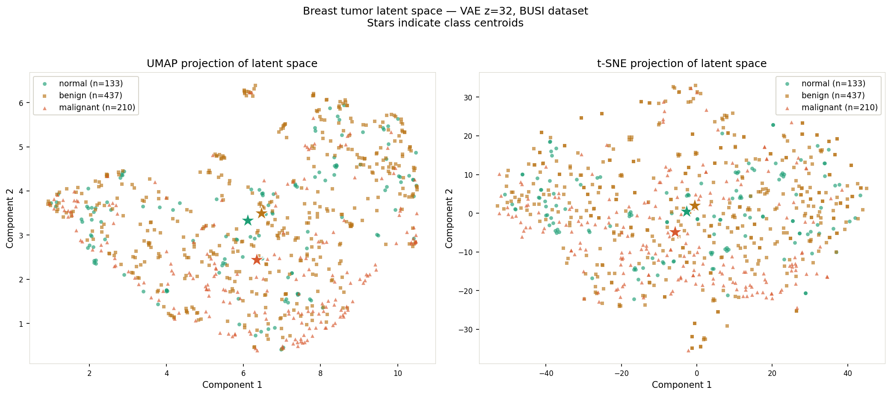

🏦
BankAI Customer Decision Prediction
Built an end-to-end ML pipeline for customer decision prediction using classification models and evaluation metrics including precision, recall, F1-score, and ROC-AUC.
AI Engineer • Generative AI • Healthcare AI
AI Engineer specializing in Healthcare AI, Medical Imaging, Retrieval-Augmented Generation, LLM reliability, and production-ready machine learning systems.
Accepted at IntelliSys 2026, Amsterdam, Netherlands. This work studies how Variational Autoencoders learn clinically meaningful latent structures from breast ultrasound images.

Developed a PyTorch-based Variational Autoencoder to analyze how KL regularization affects reconstruction quality, latent separability, clustering behavior, and diagnostic representation learning in medical imaging.
A research framework for evaluating reliability, confidence calibration, evidence usage, and failure patterns in clinical Retrieval-Augmented Generation.
Built a modular research pipeline across PubMedQA, MedQA, and MMLU-Med to analyze generation-side reliability in clinical AI systems. The evaluation includes confidence calibration, evidence utilization, invalid JSON detection, failure taxonomy, and cross-dataset behavior.
🏦
Built an end-to-end ML pipeline for customer decision prediction using classification models and evaluation metrics including precision, recall, F1-score, and ROC-AUC.
🌌
Developed a predictive modeling workflow using light-pollution and solar activity data to study aurora visibility patterns and long-term trends.
⚙️
Designed reusable PySpark ETL workflows on Databricks for ingestion, transformation, validation, and analytics-ready data processing.
Accepted Paper
Accepted at the Intelligent Systems Conference 2026 in Amsterdam, Netherlands, for research on deep generative modeling in breast ultrasound representation learning.
Conference Presentation
Received 3rd Place for presenting research on Variational Autoencoder-based breast tumor analysis.
Research Poster
Presented tumor representation and reconstruction results in Little Rock, Arkansas.
Python • PyTorch • Scikit-learn • Transformers • Computer Vision • NLP • Model Evaluation
LLMs • RAG • ChromaDB • Hugging Face • Prompt Engineering • LangGraph • Gemini API
SQL • PostgreSQL • PySpark • Databricks • AWS • GCP • ETL Pipelines
Power BI • Tableau • Excel • EDA • Matplotlib • Seaborn • Statistical Analysis